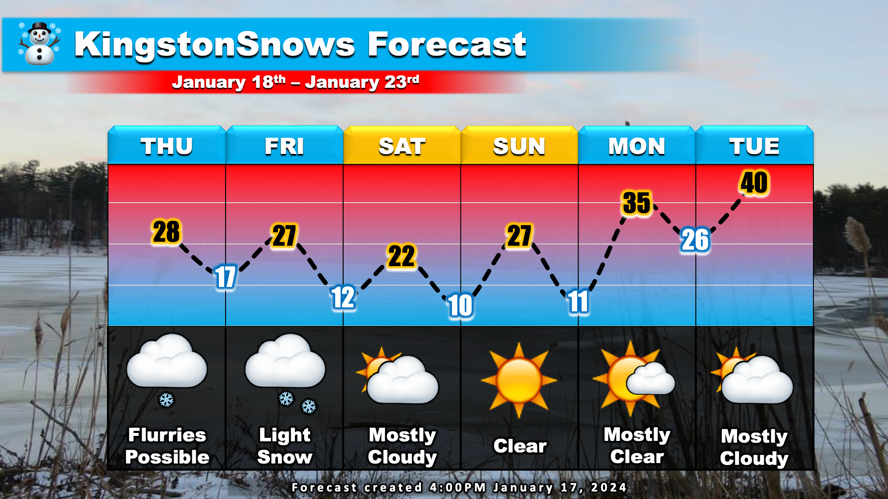

Light snow to end the week
School Forecast
for Thursday January 18th
Last updated: 5:00PM Wednesday January 17, 2024
| 0% (Nope) |
|---|
| 0% (Nope) |
|---|
| 10% (Low) |
|---|
___________________
5:00PM Wednesday Update
So far this week has brought us the coldest air of the season along with a decent dose of snow. The wintry week will continue to live up to mid-January expectations with more snow and cold before the week is over.
The Forecast: Tonight will feature another round of frigid air as temperatures fall to near single digits. A weak disturbance will ripple through the region tomorrow. This will result in flurries and light snow showers tomorrow afternoon across northern New York and into parts of the Catskills. Here in Kingston, can't rule out some flurries or a passing snow shower during the afternoon. No snow accumulation is expected, but a light dusting will be possible in areas where snow showers do occur. A second, more potent, storm system will mover through on Friday. This second system will produce light snow across much of the region, including here in the Kingston area. Currently in Kingston, the most likely start time for any snow is around 7AM Friday. Light snow will be possible throughout the day with an inch or so likely by afternoon. After snow tapers off Friday evening, the weekend will feature dry weather but with temperatures remaining in the 20s during the daytime and near the single digits overnight.

The Impacts: More travel and school impacts are likely before the end of the week due to snow. Thursday: Light snow showers on Thursday may result in slippery roads out toward the Catskills in the afternoon. However, snow showers will have a difficult time making it over the mountains so no more than possibly a light dusting of snow is expected in the Hudson Valley. School districts in the far western parts of Ulster County -up in the Catskills- such as Margaretville or Livingston Manor may issue early dismissals tomorrow, however, school impacts are no likely in Kingston on Thursday. Friday: Light snow on Friday is expected to stick to all surfaces, including roads, due to cold temperatures. Slick roads are expected late Friday morning though Friday afternoon across all of Ulster County. Travel will be possible, but it will be hazardous. County-wide cancellations or early dismissals are currently likely on Friday. The main determining factor will be based on the ultimate snow start time.
Next Update:
Thursday
-Ethan

KingstonSnows | Kingston, New York
Website built by Ethan Burwell